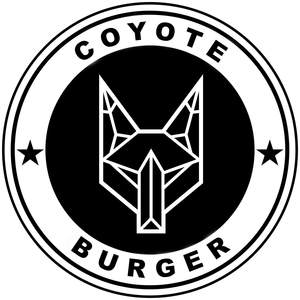

Trade Mark Journal No.2025/019 9 May 2025
UK00004191478 18 April 2025 (29,30,43)

- Class 29
- Veggie burger patties; Burgers; Meat burgers; Chicken burgers; Hamburgers; Uncooked hamburger patties; Meat products being in the form of burgers; Milkshakes; Chips [french fries]; Fried meat; French fries; Beef; Fried chicken.
- Class 30
- Hamburger sandwiches; Cheeseburgers [sandwiches]; Hamburgers in buns; Chicken sandwiches; Sandwiches containing hamburgers; Burgers contained in bread rolls; Hamburgers contained in bread buns; Sandwiches; Hamburgers being cooked and contained in a bread roll; Barbecue sauce; Hot dog sandwiches; Chili sauce; Cheese sauce; Toasted sandwiches; Vegan mayonnaise; Sandwiches containing chicken; Aioli; Ketchup; Sandwiches containing meat; Tomato ketchup; Food seasonings.
- Class 43
- Fast-food restaurant services; Grill restaurants; Catering in fast-food cafeterias; Food and drink catering; Catering of food and drink; Catering (Food and drink -); Catering of food and drinks; Preparation of food and drink; Preparation of food and beverages; Fast food restaurants; Provision of food and drink in restaurants; Food preparation; Take-away food and drink services; Providing food and drink; Providing of food and drink; Takeaway food and drink services; Serving food and drinks; Providing food and beverages; Provision of food and beverages; Provision of food and drink; Hospitality services [food and drink]; Providing food and drink in bistros; Food and drink catering for institutions; Take-away food services; Services for the preparation of food and drink; Food and drink preparation services; Takeaway food services; Food and drink catering for banquets; Catering for the provision of food and drink; Providing food and drink for guests in restaurants; Take-away fast food services; Serving food and drink for guests in restaurants; Catering for the provision of food and beverages; Providing food and drink in doughnut shops; Catering; Catering services; Hotel catering services; Mobile catering; Business catering services; Catering services for hospitality suites; Catering services for company cafeterias; Catering services for providing European-style cuisine; Outside catering; Mobile catering services; Outside catering services; Catering services for providing Japanese cuisine; Catering services for providing Spanish cuisine; Catering services for schools; Catering services for educational establishments; Catering services for hospitals; Rental of catering equipment; Catering services for the provision of food; Catering services specialising in cutting ham for weddings and private events; Providing food and drink catering services for convention facilities; Providing food and drink catering services for exhibition facilities; Catering services specialised in cutting ham by hand, for weddings and private events; Providing food and drink catering services for fair and exhibition facilities; Consultancy services in the field of food and drink catering; Charitable services, namely providing food and drink catering; Organisation of catering for birthday parties; Catering services for the provision of food and drink; Office catering services for the provision of coffee; Catering services specialising in cutting ham for fairs, tastings and public events; Catering services for retirement homes; Catering services specialised in cutting ham by hand, for fairs, tastings and public events; Catering services for nursing homes; Food and drink catering for cocktail parties; Providing restaurant services; Banqueting services; Restaurant services; Hospitality services [accommodation]; Take-away restaurant services; Carvery restaurant services; Restaurant services incorporating licensed bar facilities; Take-out restaurant services; Providing banquet and social function facilities for special occasions; Holiday planning services [accommodation]; Hotel restaurant services; Services for reserving holiday accommodation; Self-service restaurant services; Restaurant reservation services; Providing temporary accommodation as part of hospitality packages; Washoku restaurant services; Accommodation services; Services for providing food; Bartending services; Holiday accommodation services; Mobile restaurant services; Booking services for holiday accommodation; Bistro services; Ramen restaurant services; Providing guesthouse services; Sushi restaurant services; Bar and restaurant services; Restaurant and bar services; Reservation and booking services for restaurants and meals; Hotel accommodation services; Tempura restaurant services; Booking services for accommodation; Providing hotel accommodation; Providing accommodation for functions; Consultancy services relating to hotel facilities; Restaurant services provided by hotels; Accommodation services for meetings; Personal chef services; Accommodation services for functions; Providing accommodation for meetings; Restaurant services for the provision of fast food; Corporate hospitality (provision of food and drink); Tourist camp services [accommodation]; Charitable services, namely providing temporary accommodation; Arranging of wedding receptions [food and drink]; Brasserie services; Food preparation services; Booking agency services for holiday accommodation; Reservation services for accommodation; Accommodation reservation services; Snack-bar services; Travel agency services for reserving hotel accommodation; Arranging of wedding receptions [venues]; Tourist agency services for booking accommodation; Tour operator services for the booking of temporary accommodation; Hotel accommodation reservation services; Consultancy services relating to food preparation; Providing temporary lodging for guests; Services for providing food and drink; Booking agency services for hotel accommodation; Agency services for booking hotel accommodation; Arranging of hotel accommodation; Arranging hotel accommodation; Restaurants; Carry-out restaurants; Serving food and drink in restaurants and bars; Restaurants (Self-service -); Self-service restaurants; Tourist restaurants; Eateries; Providing food and drink in restaurants and bars; Serving food and drink in doughnut shops; Cafe services; Serving food and drink in Internet cafes; Serving food and drink for guests; Providing food and drink for guests; Coffee bar services; Self-service cafeteria services.
Coyote Burger Ltd